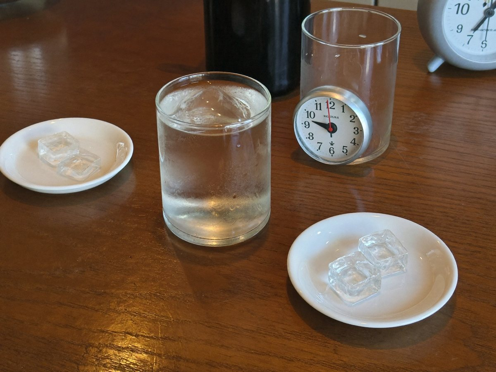

전체 단원 › 실험·활동 › 4학년 1학기 과학
얼음 녹이기 경주와 병 물방울

얼음을 가장 빨리 녹이는 방법을 겨루고, 차가운 병 겉에 맺히는 물방울의 정체를 찾아요.
40분 · 난이도 ★☆☆ 쉬움
준비물
- 같은 크기 얼음 5개 — 같은 얼음 틀에서 꺼내요
- 지퍼백 5개 — 얼음을 하나씩 담아요
- 소금, 수건, 그릇 — 녹이는 방법마다 써요
- 색깔 음료를 담은 페트병 2개 — 주스·보리차처럼 색이 있는 음료를 담아요. 하나는 냉장고에서 차갑게, 하나는 실온
- 시계 — 녹는 시간을 재요
- 관찰 기록지 도안 — 아래에서 내려받아요
실험 방법
- 방법 정하기
가족마다 얼음 녹이는 방법을 하나씩 골라요. 손으로 쥐기, 소금 뿌리기, 수건으로 싸기, 햇볕에 두기, 그대로 두기. 손으로 쥐는 사람은 손이 너무 차가우면 잠깐씩 내려놓아요. - 동시에 시작
지퍼백에 얼음을 넣고 같은 시각에 시작해요. 다 녹은 시각을 기록지에 적어요. - 결과 비교
가장 빨리 녹은 방법과 가장 늦게 녹은 방법을 찾아요. 수건으로 싼 얼음은 왜 늦게 녹았을까요? - 병 물방울 관찰
냉장고에서 꺼낸 페트병과 실온 페트병을 나란히 두고 5분 기다려요. 어느 쪽 겉에 물방울이 맺히나요? - 물방울 닦아 보기
맺힌 물방울을 흰 휴지로 닦아 음료 색이 묻어나는지 봐요. 병 안의 음료가 새어 나온 걸까요?
관찰해 봐요
- 얼음이 녹으면 무게는 어떻게 될까요? 부피는 어떻게 될까요?
- 차가운 병 겉의 물방울은 어디에서 왔을까요?
- 겨울 아침 유리창이 뿌옇게 되는 것도 같은 까닭일까요?
왜 그럴까?
물은 얼음(고체), 물(액체), 수증기(기체)로 모습을 바꿔요. 따뜻한 열을 받으면 얼음이 녹아 물이 되고, 물이 증발하면 눈에 보이지 않는 수증기가 돼요. 공기 속 수증기가 차가운 병에 닿으면 다시 물방울로 변해서 병 겉에 맺혀요.
학교 교육과정 연결
- [4과10-02] 물이 얼 때, 얼음이 녹을 때, 물이 증발할 때와 끓을 때, 수증기가 응결할 때의 변화를 관찰할 수 있다.